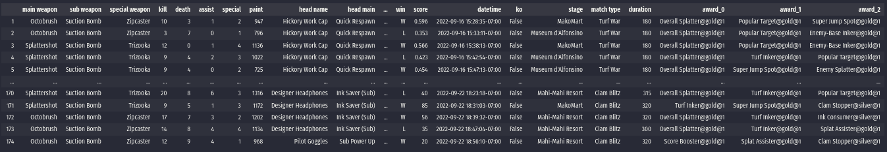

Quickstart¶
The first thing to do is to get s3s installed and running in your system. Even though SplatStats doesn’t strictly require the package to be used, it’s the way we will be downloading the JSON history data into our system.
Getting s3s up and running¶
We will provide a brief set of instructions to get s3s running, but please refer to their repo for more information.
First, we need to clone or download the repository. Once we do this, we navigate to the folder and install the required libraries with:
pip install -r requirements.txt
With those in place, we run the main script with the -o flag so that it exports the JSON files to disk:
python s3s.py -o
The first time it’s run, it will ask us to follow some instructions so that it can gain access to your splatoon data (for more information have a look at s3s or splatnet2statink instructions). Please note that it might be necessary to create an account in stat.ink to generate a couple of keys.
Finally, I do have a fork of the repo at the state it was when I started developing SplatStats (in case the devs modify the structure to a point where it’s no longer compatible with our package).
Installing SplatStats¶
To install the latest SplatStats version, simply run:
pip install SplatStats
And to upgrade it:
pip install SplatStats --upgrade
The use of virtual environments is highly recommended, and we do provide our requirements.yml file to install all the required dependencies to run both SplatStats and s3s in an anaconda virtual environment.
Demo Code and Files (for the impatient)¶
If you just want to run some code and get some stats right away, run our demo to see the package in action!
Getting a player’s history dataframe¶
First, we need to have our export folders in one location (there could be other files/folder in the path, SplatStats pattern matches export-*, but can be modified). An example of the structure follows:
dataJSON
export-1663442390
coop_results.json
overview.json
results.json
export-1663442341
coop_results.json
overview.json
results.json
export-1663442130
coop_results.json
overview.json
results.json
...
Where the ID number of the folder is not relevant as it will be auto-matched by our parsing routines. For an example of these files, follow this link.
With this in place, we can import SplatStats, parse our JSON files, convert them to battle objects and dump them to disk. This is all done with the following commands:
import SplatStats as splat
# iPath is the location in which the "export-*" folders are located (from s3s)
# oPath is where we want our data to be exported to
(iPath, oPath) = ('/dataJSON', './BattlesData')
# Get s3s JSON history filepaths, process and dump the battles to pkl files
hPaths = splat.getDataFilepaths(iPath, filePat='results.json')
bPaths = splat.dumpBattlesFromJSONS(hPaths, oPath)
If you’re unsure of your in-game username (or if it contains strange characters), run the following functions:
battles = splat.loadBattlesFromFiles(bPaths)
splat.getPlayerCountsInBattles(battles)
Your username is most likely the one on the top of the counts.
With this ready, run the following lines:
playerName = YOUR_USERNAME
# Generate a Player object
plyr = splat.Player(playerName, bPaths)
plyr.battlesHistory
This should bring up a dataframe containing the full player’s history like this one:
{kind=link}
Additionally, we could check the player’s stats:
# Check the player's overall stats
plyr.playerStats
Which should return something like the following dictionary:
{
'general': {
'total matches': 163,
'win': 98,
'loss': 65,
'win ratio': 0.6012269938650306,
'kill ratio': 2.321375186846039
},
'kpads': {
'kills': 1553,
'deaths': 669,
'assists': 228,
'special': 353,
'paint': 147846
},
'kpads avg': {
'kills': 9.52760736196319,
'deaths': 4.104294478527607,
'assist': 1.3987730061349692,
'special': 2.165644171779141,
'paint': 907.0306748466257
},
'kpads per min': {
'kills': 2.9288214317457775,
'deaths': 1.2288724769901596,
'assist': 0.4255475880146193,
'special': 0.6723816423510918,
'paint': 284.23987972673893
}
}
Where kpads is shorthand for “kills, paint, assist, deaths, specials”.
We could also get these stats broken down by match type:
# Check the player's overall stats
plyr.playerStatsByType
Which adds another upper level to the dictionary with they keys: Turf War, Splat Zones, Clam Blitz, Tower Control, and Rainmaker.